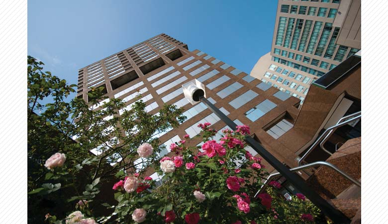
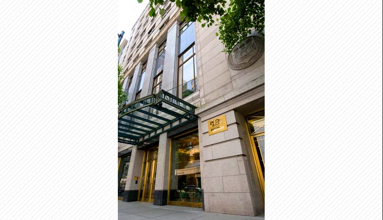
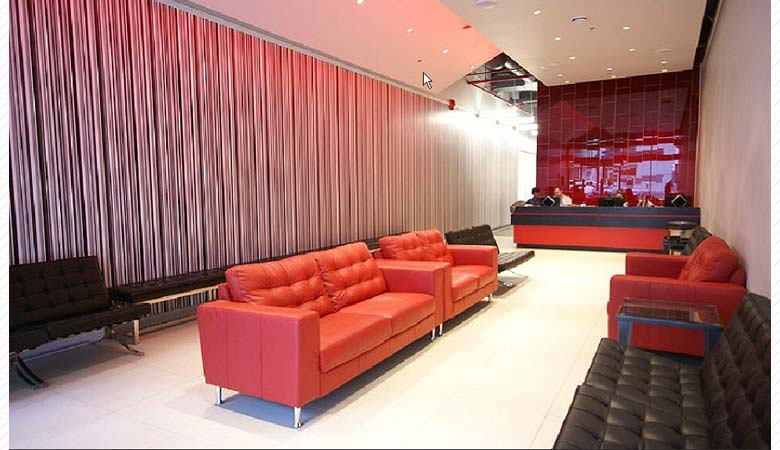
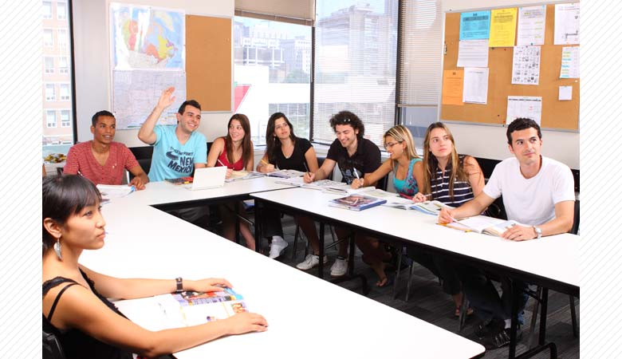
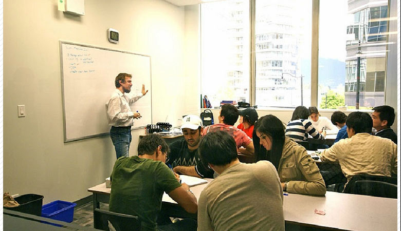
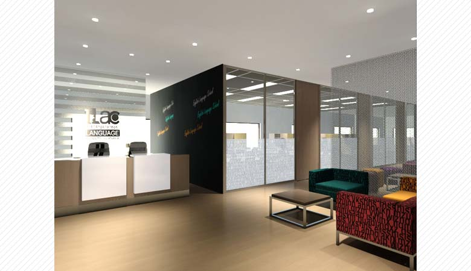
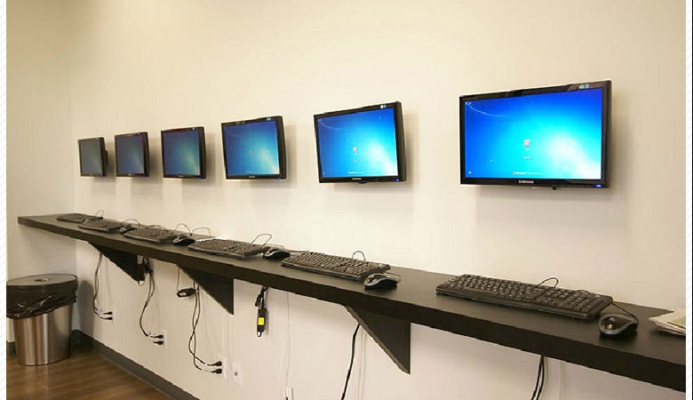
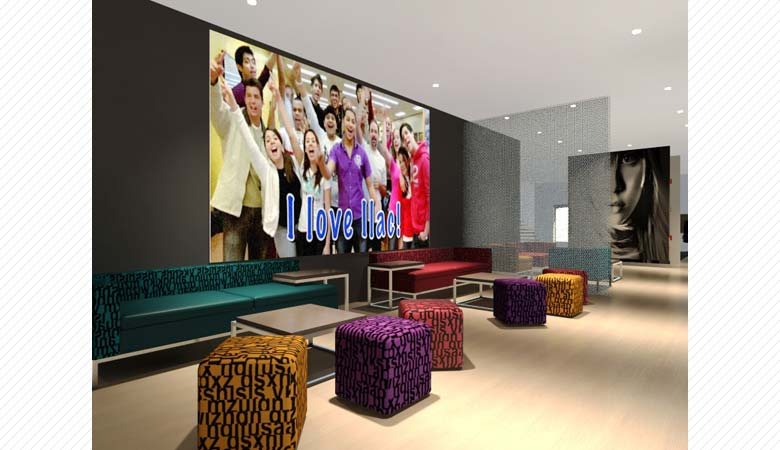
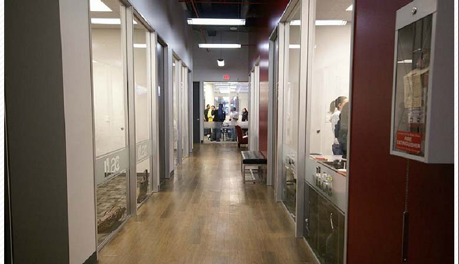
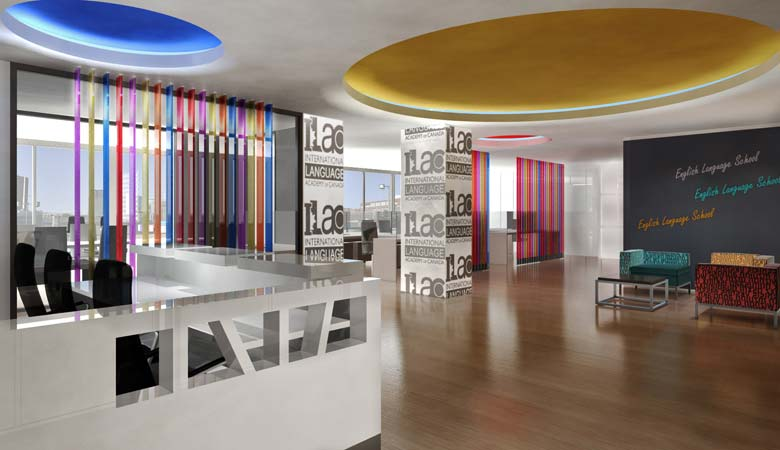

画像はトロントメインキャンパス
ランゲージトラベルマガジンやトップランゲージスクールなど、数々のアワードを受賞しているILACには
世界70ヶ国から学生が集まり、語学学習にアクティビティと、積極的に毎日を楽しんでいます！

画像はバンクーバーメインキャンパス
17段階と細かなレベル分けで、初心者から上級者まで、短期から長期まで、ニーズに合わせてレッスンが受けられます。
多国籍で様々な文化が混ざり合った素晴らしい国カナダで、世界中から来た友達と楽しく語学学習しませんか？

きめ細かなレベル分け！
17段階と細かいレベル分けで、初級者から上級者まで、短期から長期まで、英語力やニーズに合わせてレッスンが受けられます。
資格試験準備対策も充実していて、一般英語以外にFCE/CAE、BEC、IELTS、TOEFLが選択できます。

70ヶ国以上から留学生が集まり英語学習と共に異文化が学べます！
ヨーロッパ･中東30％、南米30％、アジア30％のちょうどいい国籍バランスで、制限を設けることにより常によいバランスを保っています。
母国語禁止ルールを設けることにより、自然に英語で話す習慣が身につきます。

経験のある選ばれた教師陣！
TESOLの資格と教師経験のある選りすぐりの教師が楽しく丁寧に教えます。
スピーキング、リーディング、リスニング、ライティングの総合力をつけるため、ロールプレイやプレゼンテーションの練習なども盛り込んでいます。

2週間に1度のテストで英語上達を実感！
教科書はケンブリッジ大学監修のものを使用し、
2週間に1度のテストはFCEやCAEなどのケンブリッジ公式テストの模擬試験を使用しています。
レッスンとテストを繰り返しながら自然と試験対策ができるので、上達を実感し易いカリキュラムになっています。

きれいなキャンパス！
モダンなデザインで機能的なキャンパスはインターネットの設備が整い快適です。
各キャンパス100台ほどあるコンピューターは自由に使え、日本語入力も可能です。

毎日開催人気のアクティビティ！たくさん勉強した後はアクティビティで楽しんでください。
トロントなら野球観戦やCNタワー、美術館めぐり、週末に足を伸ばせばナイアガラの滝、ニューヨークツアーやフレンチカナダへのツアー。
バンクーバーならアイスホッケー観戦やロッキーマウンテン、ウィスラー、ビクトリア、シアトル観光もあります。

提携大学は35校以上！
国際化の今、カナダの大学進学を目指して留学する方もたくさんいらっしゃいます。
提携大学が多く、大学に進学するまでしっかりサポートする専任のカウンセラーが在勤しているのは安心ですね。

サポート体制バッチリ！
日本人のカウンセラーが各キャンパスに在勤、留学中のサポートをします。
留学のことは経験者に聞くのが一番！何でも相談してください。
画面をクリックするとビデオが再生されます。
＜Cambridge International College English Course＞